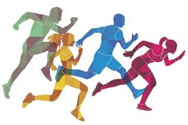

Esportes
A prática de esportes beneficia grandiosamente as pessoas e até mesmo a sociedade, pois reduz a probabilidade de aparecimento de doenças, contribui para a formação física e psíquica.
A Educação Física também deve ser vista como uma fonte de conhecimento necessário para a construção de um novo cidadão, mais completo e consciente de seu papel na sociedade a qual pertence.
A prática de esportes beneficia grandiosamente as pessoas e até mesmo a sociedade, pois reduz a probabilidade de aparecimento de doenças, contribui para a formação física e psíquica.
Jogos cooperativos são dinâmicas de grupo que têm por objetivo despertar a consciência de cooperação e promover efetivamente a ajuda entre as pessoas.
A expressão corporal ocorre por meio do ritmo e da dança: o movimento natural do ritmo estimula os gestos que as crianças captam de acordo com a sua percepção pessoal.